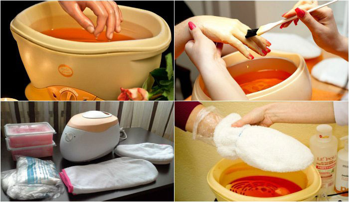
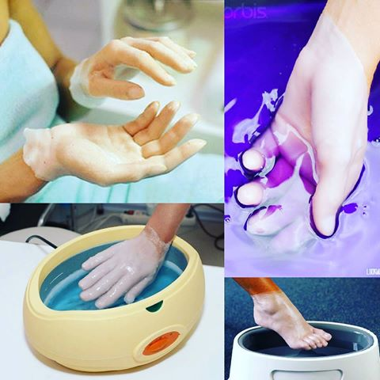
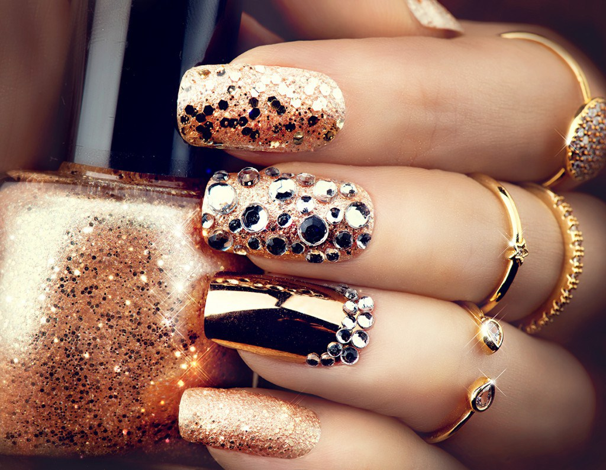
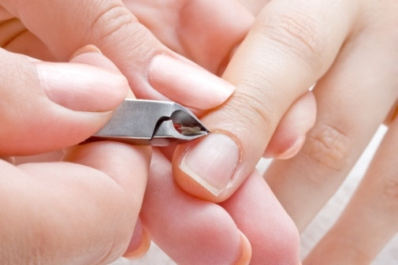
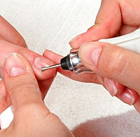
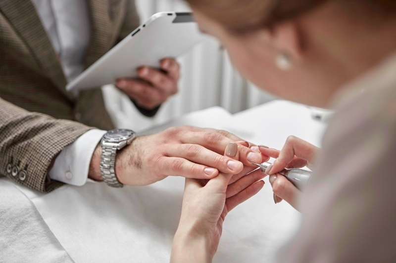
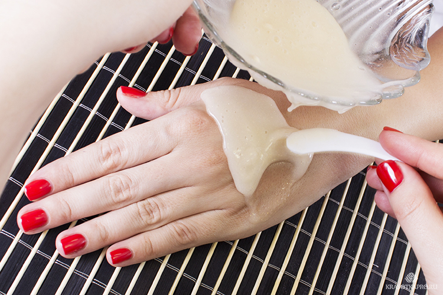

| Парафинотерапия- расслабление с эстетической функцией | |
|  | Отличным завершением маникюра и педикюра станет парафинотерапия для рук и ног. Эта приятная салонная процедура нежно закрепляет результат ухода, моментально делая кожу мягкой и гладкой. Но самое важное то, что парафинотерапия производит лечебный эффект. Она питает кутикулу, сухую и поврежденную кожу; способствует усилению действия предварительно нанесенного крема благодаря его глубокому проникновению в поры. Вдобавок окунитесь в прекрасные ароматы натуральных масел… И уже не сможете себе отказать в этом полезном удовольствии. А зачем? Ведь наши цены на парафинотерапию в Харькове. лояльны: всего лишь 60 – 80 грн. Парафинатерапия в салоне красоты "pin-ap" представлена ТМ TANOYA. |
|---|---|
| Педикюр- с нами достигнуть совершенства легко | |
|  | Хочется чувствовать себя совершенной от корней волос до кончиков пальцев. А женские ножки – это особая красота и даже оружие соблазнения. Поэтому леди безоговорочно и непременно оценят достоинства нашего женского обрезного и аппаратного педикюра в Харькове . Также у нас Вы можете сделать кислотный педикюр. В процессе процедуры вам на ступню наносят специальный гель на основе фруктовых кислот, который избавит вас от ороговевшей грубой кожи, и сделает ваши пяточки гладкими и ухожиными на долго. Цены лояльны, начиная от 100 гривен за обрезной педикюр Харьков . |
| Наращивание ногтей : искусство «творить» маникюр | |
|  | Природа наградила ломкими, некрасивыми ногтями, которые расслаиваются и плохо растут? Это еще не значит, что красивый маникюр для Вас – утопия! Cалон красоты "pin-ap" предлагает простой выход – наращивание ногтей в Харькове . Минимум затрат времени и денег с Вашей стороны, максимум стараний с нашей – и все в восторге от красоты ваших рук. Талантливый мастер вмиг превратит неэстетичные ногти в роскошный маникюр. А наши цены на наращивание ногтей в Харькове (Салтовка), как говорится, приятно удивят кого, угодно. Например, наращивание ногтей акрилом (KODI Prof) стоит 250 грн, а гелем (BLAZE) – 270 грн. |
| Сделать маникюр: за красивыми ноготками к нам! | |
|  | Классический, или обрезной маникюр-это уход за руками, при котором полностью удаляется кутику ла с помощью маникюрных щипчиков или ножниц, вычищается «птеригий» (пленка) из под кутикулы. Процедура классического маникюра очень популярна,т.к. продолжительность данной процедуры занимает небольшое колличество времени, и это единственно приемлемый метод быстрой "реанимации" рук при нерегулярном и несвоевременом уходе за ногтями. |
|  | Аппаратный маникюр и педикюр не требуют предва рительного распаривания кожи, они выполняются по сухой поверхности.Плюсов у аппаратного маникюра и педикюра множество. Он считается наиболее безопасным и удачным как для для ногтевой пластины, так и для кожи, поскольку совершенно не травмирует их. Отсутствие режущих инструментов делает его максимально деликатным. Также стоит отметить стерильность процедуры, так что попадание инфекции вам не грозит. |
|  | Мужской или детский маникюр, по сути, одно и тоже, что и гигиенический. Он включает в себя придание ногтям хоро шей формы, удаление заусенцев, обработка кутикулы (по необходимости).Кутикула размягчается специальным маслом, пре пятствующим появлению заусенец. Если заусенцы все же есть, они осторожно обра батываются и дезинфицируются во избе жание воспалений. Также по желанию кли ент может ограничиться одной -двумя процедурами из выше приведенного списка. |
| Уход за кожей рук | |
|  | Побалуйте себя приятными ощущениями, попробовав услугу SPA-ухода в нашем салоне, которая позволит сохранить ухоженный вид рук и ног на более длительное время. Она включает в себя высококачественное увлажнение и смягчение кожи, мягкий, но эффективный скраб, питание кожи натуральными витаминами. Завершает процедуру расслабляющий массаж. SPA-уход хорошо использовать в сочетание с маникюром и педикюром для большего эффекта. |
главная